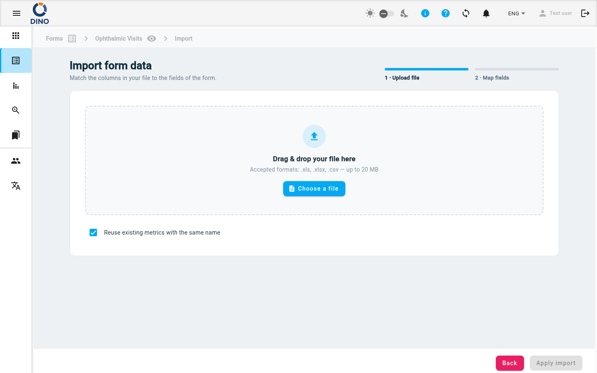

Importare dati
La pagina Importare dati ti consente di caricare in blocco le risposte in uno schema di modulo da un file .xls, .xlsx o .csv. Una procedura guidata in due passaggi ti accompagna nel caricamento del file e nella mappatura delle sue colonne ai campi del modulo.

Accedere alla pagina di importazione
- Vai all’elenco Moduli e seleziona uno schema di modulo.
- Dalla vista dati del modulo, clicca su Importa (pulsante nella barra degli strumenti).
Passo 1 — Caricare il file
Il primo passaggio mostra un'area di trascinamento o un selettore di file.
- Formati accettati:
.xls,.xlsx,.csv - Dimensione massima del file: 20 MB
Per caricare:
- Trascina un file nell'area tratteggiata oppure clicca su Scegli un file per sfogliare.
- Dopo la selezione, il nome del file appare in un chip insieme al numero di colonne rilevate.
- (Opzionale) Lascia selezionata Riutilizza metriche esistenti con lo stesso nome (impostazione predefinita) affinché ogni metrica del file il cui nome coincide con una metrica già presente nel sistema venga collegata a quella esistente invece di crearne una duplicata. Deseleziona per creare sempre nuove metriche.
- Clicca su Avanti (o sull'etichetta dello stepper “2 · Mappa campi”) per proseguire.
Formati di file
Dino accetta gli stessi tipi di file utilizzati per la raccolta dati standard. Assicurati che le intestazioni delle colonne siano chiare: verranno usate come suggerimenti durante la mappatura.
Metriche identificate tramite ID
Se una colonna metrica nel file fornisce l'ID (UUID) della metrica, quella riga viene collegata alla metrica esistente con quell'ID e non viene creata alcuna nuova metrica. L'ID ha la precedenza sul nome della metrica, quindi ciò avviene indipendentemente dall'opzione Riutilizza metriche esistenti con lo stesso nome (che si applica solo alla corrispondenza per nome).
Passo 2 — Mappare i campi
Dopo il caricamento, vedi una tabella con tutte le colonne del tuo file. Ogni riga ha tre colonne:
- Colonna del file – l'intestazione originale del tuo file.
- Campo del modulo – un menu a discesa in cui selezioni il campo del modulo corrispondente.
- Stato – mostra se la colonna è mappata, ignorata o presenta un errore.
Azioni di mappatura
- Seleziona un campo del modulo – apri il menu a discesa per una colonna e scegli il campo corretto. Puoi cercare all'interno del menu.
- Ignora una colonna – seleziona l'opzione — Ignora questa colonna — nel menu a discesa, oppure clicca sul pulsante Ignora nella colonna Stato. Le colonne ignorate vengono oscurate.
- Ripristina una colonna ignorata – clicca sul pulsante Ripristina nella colonna Stato.
Abbinamento automatico
Clicca su Abbinamento automatico per lasciare che Dino abbini automaticamente le colonne ai campi del modulo in base alla similarità dei nomi. È un buon punto di partenza: rivedi e modifica le mappature secondo necessità.
L'abbinamento automatico funziona meglio con intestazioni che corrispondono esattamente alle etichette dei campi o contengono parole chiave simili.
Ripetizione
Se un campo del modulo selezionato è un campo ripetuto (ad esempio più numeri di telefono), appare un input Ripetizione sotto il menu a discesa. Inserisci l'indice di ripetizione (0, 1, 2, …) per assegnare questa colonna del file a una occorrenza del gruppo ripetuto.
Riepilogo della barra degli strumenti
Nella parte superiore dell'area di mappatura, puoi vedere tre chip:
- Colonne totali – numero di colonne del file.
- Mappate – colonne che sono state assegnate a un campo del modulo.
- Ignorate – colonne che hai scelto di ignorare.
Usa l'input Cerca colonne per filtrare la tabella per nome della colonna del file.
Applicare l'importazione
Quando tutte le colonne desiderate sono mappate e non ci sono errori, il pulsante Applica importazione diventa attivo. Cliccalo per avviare l'importazione. Durante l'elaborazione, appare un indicatore di caricamento. Puoi cliccare su Indietro per tornare al passo 1 o annullare l'importazione.
Dopo un'importazione riuscita, vieni riportato all'elenco dei dati del modulo, dove vengono visualizzate le nuove risposte.
Mappatura duplicata
Se mappi lo stesso campo del modulo a più di una colonna del file, viene mostrato un errore di validazione e il pulsante Applica importazione rimane disabilitato fino a quando non viene corretto.